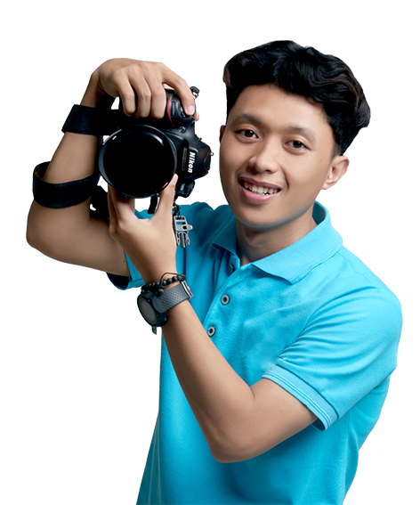
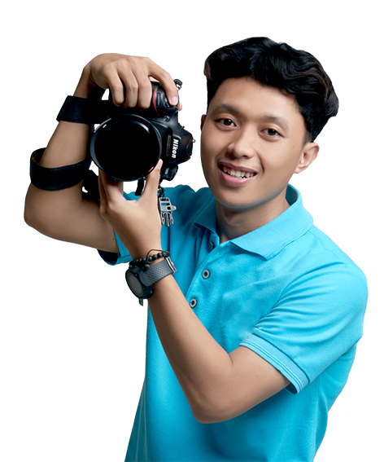

Hai, saya Taufik – Saya Seorang Fotografer
Seorang profesional kreatif dengan spesialisasi fotografi, retouching, dan desain, yang fokus untuk memberikan estetika visual berkualitas tinggi.
 

Kumpulan Project
Kumpulan karya visual dalam bentuk foto, video, dan desain.


0+
Tahun Pengalaman
0+
Proyek Selesai
0+
Klien Puas

Sedikit Tentang Saya
Hai! Saya Taufik, seorang profesional kreatif yang bersemangat dalam menangkap momen dan menciptakan visual yang bercerita. Dengan pengalaman bertahun-tahun di dunia fotografi dan desain, saya berdedikasi untuk memberikan hasil berkualitas tinggi yang tidak hanya indah secara estetika, tetapi juga bermakna.
Selengkapnya Tentang SayaBagaimana Saya Bekerja
Setiap proyek hebat dimulai dengan proses yang terstruktur dengan baik.

Dari Jurnal Saya
Beberapa tulisan dan cerita terbaru dari perjalanan kreatif saya.

Pertanyaan yang Sering Diajukan
Temukan jawaban cepat untuk pertanyaan umum tentang layanan dan proses kerja saya.
Prosesnya dimulai dari konsultasi untuk memahami kebutuhan Anda, diikuti dengan pengiriman proposal dan penawaran. Setelah kesepakatan, kita akan masuk ke tahap eksekusi proyek dengan komunikasi rutin hingga proyek selesai dan diserahkan.
Waktu pengerjaan sangat bervariasi tergantung pada kompleksitas proyek. Untuk proyek desain logo biasanya memakan waktu 1-2 minggu, sementara proyek retouching foto bisa selesai dalam beberapa hari. Estimasi waktu yang lebih akurat akan diberikan dalam proposal.
Untuk proyek baru, saya biasanya meminta uang muka (down payment) sebesar 50% sebelum pekerjaan dimulai. Sisa pembayaran dilakukan setelah proyek selesai dan sebelum file final diserahkan. Saya menerima pembayaran melalui transfer bank.
Belum ketemu apa yang dicari?
Kalau ga nemu apa yang dicari di FAQ kami, jangan kuatir. Kakak bisa kontak kami langsung.
Kontak Saya
×